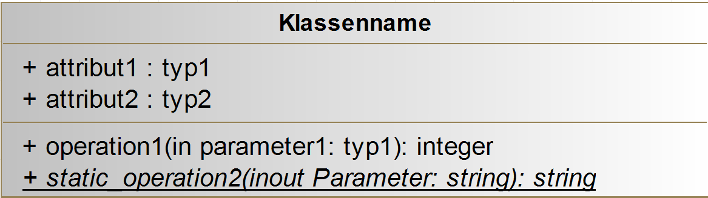
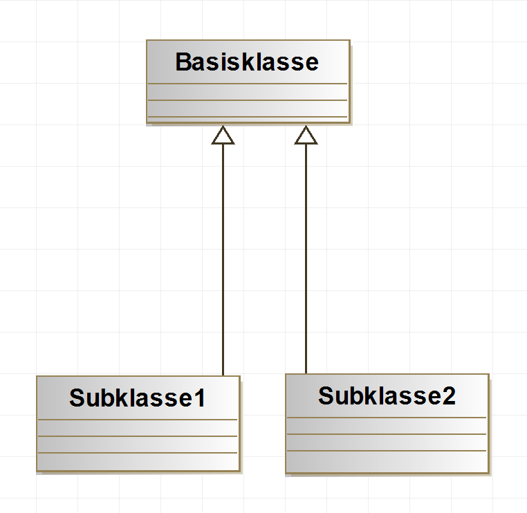
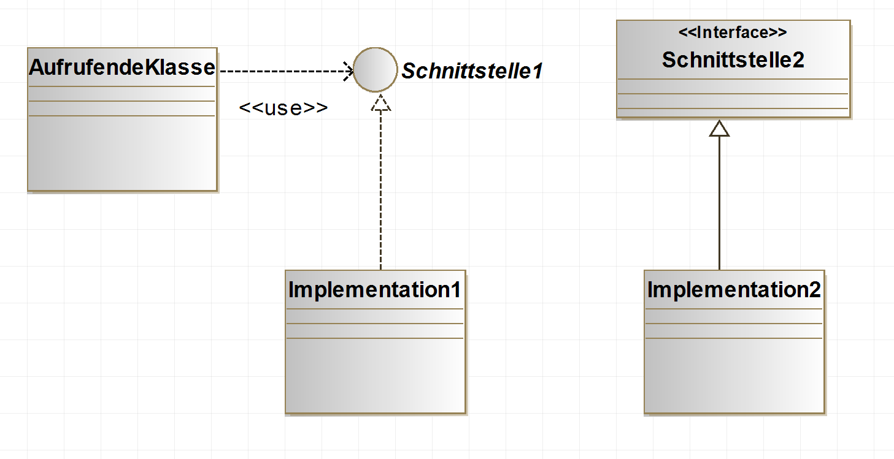
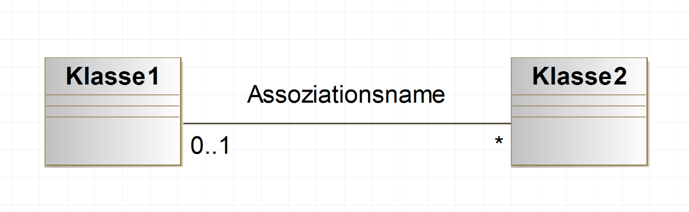
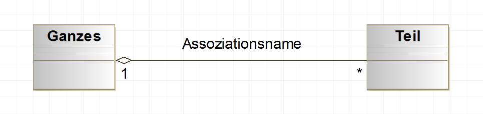
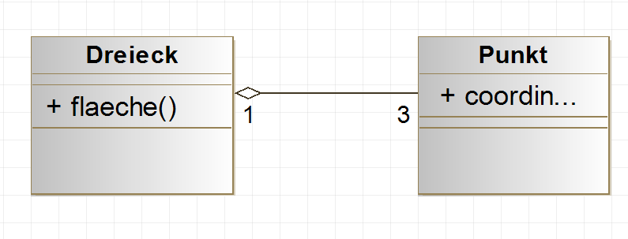
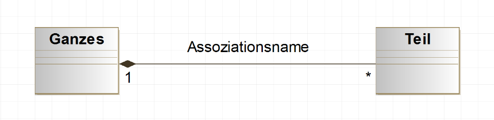
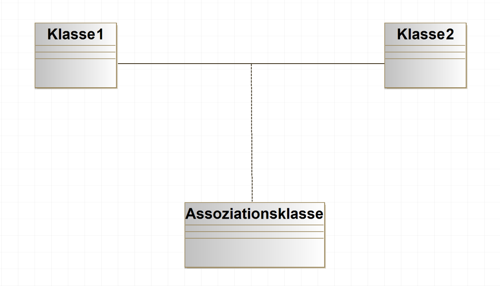
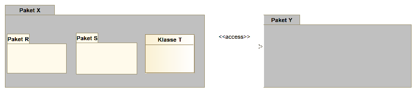

UML
Klassen und Paketdiagramme
Marcel Lüthi
Departement Mathematik und Informatik

Graphische Modellierungssprachen
- Grafische Modellierungssprachen lassen uns Software auf höherer Ebene verstehen.
- Weiteres Beispiel von Abstraktion
- Brauchen standardisierte Notationen um Artefakte und Entscheidungen zu
- Modellieren
- Dokumentieren
- Kommunizieren
UML
Grafische Modellierungssprache zur Spezifikation, Konstruktion und Dokumentation von Software-Teilen und anderen Systeme
- Quasi standard zur graphischen Modellierung von OO-Systemen
- Entwickelt 1990 (Grady Booch, Ivar Jacobson, James Rumbaugh)
- Mittlerweise in der Version 2.5
UML Hype
- UML ist kein Wundermittel wie anfang 2000 geglaubt wurde
- ... aber trotzdem enorm nützlich
Diagrammarten (UML 2)
Strukturdiagramme (statisch)
- Klassendiagramm
- Montagediagramm
- Komponentendiagramm
- Verteilungsdiagramm
- Objektdiagramm
- Paketdiagramm
- Profildiagramm
Verhaltensdiagramme (dynamisch)
- Aktivitätsdiagramm
- Use-case Diagramm
- Interaktionsübersichtsdiagramm
- Kommunikationsdiagramm
- Sequenzdiagramm
- Zeitverlaufdiagramm
- Zustandsdiagramm
UML Diagramme im Designprozess
Klassendiagramm
- Wichtigste Diagrammart in UML
- Häufig nur als Designnotation verwendet
- Ist aber auch mächtiges Modellierungstool
- Klassen entsprechen zu modellierenden Entitäten
- Klasse in UML muss nicht Klasse in Implementation entsprechen
Beispiel: Bibliotheksanwendung
Notation Klasse
- Zur Modellierung kann Detailsgrad kann frei gewählt werden.
- Vollständigkeit nur zur Codegenerierung wichtig
Notation Vererbung
- Entspricht der "Inherits from" Beziehung
- Auch "is-a" Beziehung genannt
Beispiel: Bibliotheksanwendung
Notation Interfaces
Notation Assoziationen
- Beziehungen zwischen Klassen, die Implementation unterstützen muss
- Optional kann Multiplizität angegeben werden.
Beispiel: Bibliotheksanwendung
Aggregation
- Beschreibt Teile/Ganze Beziehung
- Auch "has-a" Beziehung genannt
- Teil kann ohne Ganzes existieren
Aggregation vs "IS_COMPONENT_OF"
- Aggregation ist nicht dasselbe wie IS_COMPONENT_OF
- Aggregat (Dreieck) hat eigene Methoden und Semantik
Komposition
- Beschreibt Teile/Ganze Beziehung
- Auch "has-a" Beziehung genannt
- Teil kann nur als Teil vom Ganzen existieren
Beispiel: Bibliotheksanwendung
Assoziationsklasse
- Spezifiziert Methoden/Attribute einer Beziehung
Beispiel: Bibliotheksanwendung
Paketdiagramm
- Modelliert "IS_COMPONENT_OF" Beziehung
Toolunterstützung
- Durch die weite Verbreitung existieren eine Vielzahl von Tools zur Erstellung von Diagrammen
- Empfehlung: Modelio (www.modelio.org)
- Modernes und mächtiges Open Source Tool
Unit tests
- Weshalb brauchen wir standardisierte graphische Notationen?
- Klassendiagramme können sowohl als Designtool als auch als Modellierungstool eingesetzt werden.
- Erklären sie den Unterschied.
- Was spezifizieren die Multiplizitäten von Assoziationen?
- Wie unterscheidet sich Aggregation von "Is_component_of" Beziehung
- Wozu brauchen wir Assoziationsklassen?